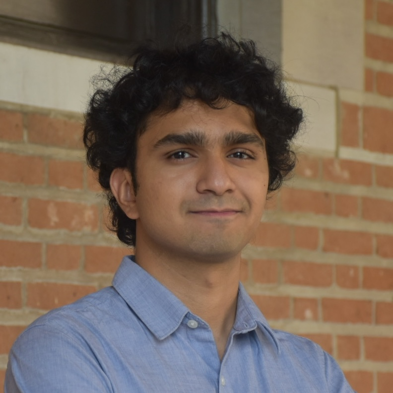

Exploring how neural circuits learn & remember
I study the cellular and molecular basis of learning and memory using the Aplysia feeding circuit. My work combines population-level neural recording with tensor decomposition to understand how experience reshapes circuit dynamics.

Publications
Peer-reviewed articles and preprints. See my Google Scholar for a complete list.
Projects
Open-source tools, analysis pipelines, and explorations in computational neuroscience.
Aplysia TCA Pipeline
End-to-end analysis pipeline for multi-neuron spike data: preprocessing, contamination masking, binning, tensor construction, and component extraction with visualization.
GNN Circuit Inference
Graph neural network for inferring functional connectivity from spike train data. Learns adjacency matrices to reconstruct circuit architecture from neural activity.
Neural State Space Toolkit
Dimensionality reduction and visualization tools for neural population data. PCA, alignment methods, and trajectory analysis for comparing circuit states across conditions.
Spiking Network Simulator
Izhikevich neuron model simulator with STDP learning rules. Generates synthetic spike data for benchmarking analysis methods and testing circuit hypotheses.
Blog
Notes on research methods, computational neuroscience, and the PhD journey.
What Tensor Decomposition Reveals About How Circuits Learn
An accessible introduction to TCA and why it's a powerful lens for understanding how neural populations change with experience — no linear algebra prerequisite required.
A Practical Guide to Spike Train Preprocessing
From raw extracellular recordings to clean spike trains: contamination detection, Gaussian kernel convolution, and choosing the right bin width for your analysis.
PCA vs. NMF vs. TCA: Choosing the Right Decomposition
A comparison of dimensionality reduction approaches for neural data, with code examples and practical guidance on when each method shines.
Why Aplysia? A Defense of Invertebrate Neuroscience
How a sea slug with 20,000 neurons can teach us fundamental principles about learning and memory that translate across the animal kingdom.
Curriculum Vitae
A summary of my academic background. Download the full version below.
Education
Ph.D. in Biomedical Sciences
Thesis: Population-level analysis of experience-dependent plasticity in the Aplysia feeding circuit. Advisor: Dr. [Advisor Name]
B.S. in [Your Major]
Founded the Indian Student Society. Honors/awards. Relevant coursework.
Research Experience
Graduate Research Assistant
Multi-electrode neural recording from Aplysia feeding circuits. Developed TCA-based analysis pipeline. Characterized egestive priming effects on neural population dynamics.
Skills
Python (NumPy, SciPy, scikit-learn, PyTorch, Matplotlib), MATLAB, Git, LaTeX
Tensor component analysis, PCA/NMF, statistical modeling (ANOVA, mixed-effects), extracellular electrophysiology, spike sorting, signal processing
Leadership & Activities
Founder, Indian Student Society
Established a community organization; organized cultural events and academic support programs.